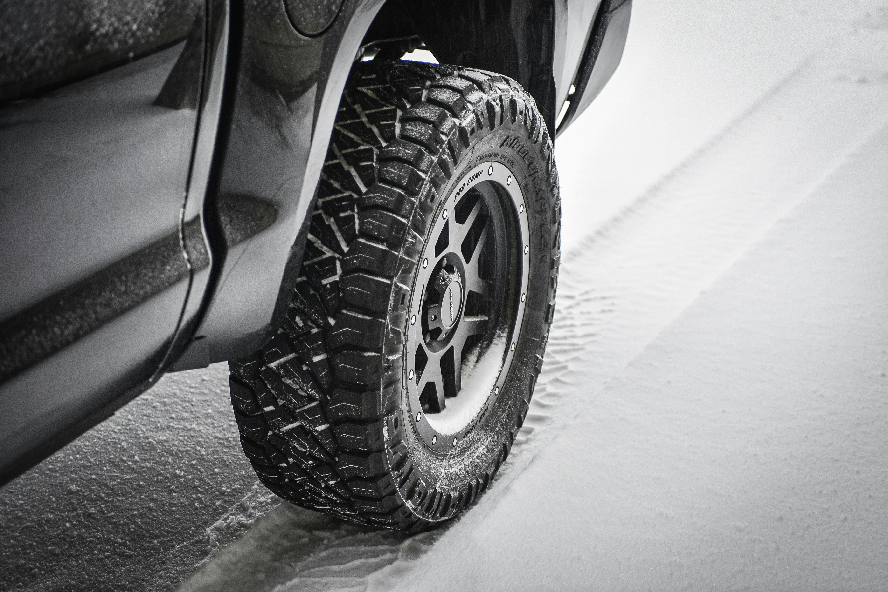

Sellel lehel räägime, millal peab autorehve vahetama ning mis vahe neil on.
Millal võib suverehve alla panna?
- Suverehvid on lubatud kasutada alates 1. märtsist kuni 1. detsembrini
- Suverehvide kasutamine on kohustuslik alates 1. maist kuni 15. oktoobrini

Millal võib talverehve alla panna?
- Talverehvid on lubatud kasutada alates 15. oktoobrist kuni 31. märtsini
- Talverehvide kasutamine on kohustuslik alates 01. detsember kuni 01. märtsini
- Erandina on seaduses välja toodud, et kui esineb talviseid teeolusid (nt väljas on miinuskraadid, sajab lund või on kiilasjää), siis võib talverehve (lamellrehvid ja naelrehvid) kasutada juba alates 01. oktoobrist kuni 30. aprillini!

Mis vahe on talverehvidel ja suverehvidel?
Talverehvid ja suverehvid on loodud vastama erinevatele ilmastikutingimustele ja tagama parima haarduvuse ja juhitavuse vastavalt hooajale. Siin on mõned peamised erinevused:
1. Kummisegu
- Talverehvid: Kasutavad pehmemat kummisegu, mis säilitab paindlikkuse madalatel temperatuuridel (tavaliselt alla +7°C). See võimaldab paremat haardumist külmas ja libedal teel.
- Suverehvid: Kasutavad kõvemat kummisegu, mis on vastupidavam kuumuses ja tagab parema stabiilsuse ja kulumiskindluse kõrgematel temperatuuridel.
2. Mustri sügavus ja disain
- Talverehvid: Neil on sügavamad ja laiemad mustrid, mis aitavad lume ja vee tõhusamal eemale juhtimisel ning libisemise vältimisel. Paljudel talverehvidel on ka lamellid ehk peened lõiked, mis suurendavad haarduvust jää ja lume korral.
- Suverehvid: Mustrid on madalamad ja optimeeritud parema haarduvuse jaoks kuival ja märjal teel soojades tingimustes. Suverehvidel puuduvad lamellid, kuna neid pole kuuma ilma korral vaja ning need võivad isegi pidamist halvendada.
3. Juhitavus ja haarduvus
- Talverehvid: Pakuvad parimat haarduvust ja juhitavust libedates talvistes oludes, kuid kuival ja soojal teel võivad need olla ebastabiilsemad ja rohkem kuluda.
- Suverehvid: Tagavad stabiilsuse ja haarduvuse kuival ja märjal suvisel teel. Talvel nende haarduvus aga langeb märgatavalt, eriti jää ja lume korral, mis muudab nende kasutamise külmades oludes ohtlikuks.
4. Kasutamine ja seadusandlus
- Paljudes riikides on talverehvide kasutamine talvehooajal kohustuslik, kuna need suurendavad oluliselt ohutust lumistes ja jäistes tingimustes.
- Suverehve on soovitatav kasutada ainult suvel, kuna talverehvid on talvises kliimas hädavajalikud ohutuse tagamiseks.